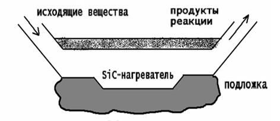
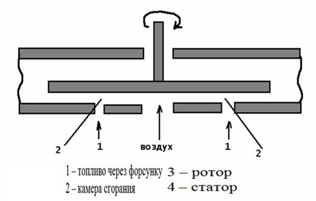
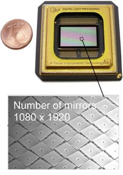
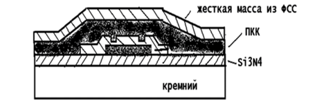
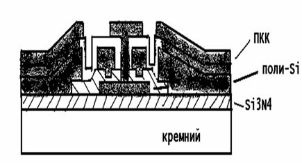
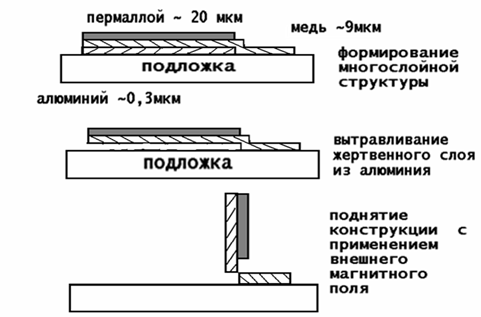

электронный
ресурс по учебной дисциплине 1-58 01 01 - "ИНЖЕНЕРНО-ПСИХОЛОГИЧЕСКОЕ ОБЕСПЕЧЕНИЕ ИНФОРМАЦИОННЫХ ТЕХНОЛОГИЙ"
|
||
| Оглавление | Программа | Теория | Практика| Контроль знаний | Об авторах | ||
|
Содержание
Технологии поверхностной микрообработки § 12.1 Особенности и применение поверхностной микрообработки. § 12.1 Особенности и применение поверхностной микрообработки. Технология поверхностной микрообработки с жертвенными слоями. Жертвенный слой – это позже удаляемый слой. Технология ориентирована на использование базовых кремниевых техпроцессов микроэлектроники. В основе лежат несколько основных типовых технических операций: » Нанесение жертвенного слоя; » Нанесение рабочего слоя; » Создание отверстий в рабочем слое; » Удаление через отверстия в рабочем слое жертвенного слоя.
Рисунок 12.1 – Отверстие поли-Si: типовая структура с объемной полостью Последовательность основных технологических операций при реализации поверхностной микротехнологии: 1) Формирование слоя двуокиси кремния на кремнии; 2) Осаждение слоя поли-Si на слой SiO2; 3) Нанесение слоя фоторезистора на поли-Si; 4) Фотолитография для вскрытия окон в фоторезисте . Рисунок 12.2 – схема базового технологического процесса поверхностной микрообработки Использование базовой микроструктуры для различных изделий микросистемной техники. Полученная микроструктура является базовой для большого числа изделий МСТ Ø Микрореактор Ø Микроинструмент (микропинцет) Ø Микроинструмент (микродозатор) Ø Микротурбина Особое внимание в указанной технологии уделяется процессам: Ø Осаждение материалов; Ø Локальное избирательное травление Рисунок 12.3 – Базовая микроструктура  Рисунок 12.4 – Микрореактор Рисунок 12.5 – Микропинцет Рисунок 12.6 – Микродозатор  Рисунок 12.7 – Микротурбина Пример: микрошарнир. Применяется в системах микрооптики для создания подъемных платформ для микрозеркал.  Рисунок 12.8 – Микрозеркала MUMPs – технология. Аббревиатура: Multi User Mems Proccesses – многопользовательская Mems технология. Разработчик – фирма Cronos (USA). Это процесс трехслойной поликристал-лической поверхностной микрообработки Рисунок 12.9 – Осаждение Si3N4 (нитрид кремния) и поликристаллического кремния (0-ой слой поли- Si) Рисунок 12.10 – Фотолитография по поли-Si плюс реактивное ионное травление поли-Si Рисунок 12.11 – Осаждение 1-го слоя фосфоросиликатного стекла (2мкм ФСС) Рисунок 12.12 – Фотолитография для получения углублений в ФСС и травление ФСС методом реактивного ионного травления (глубина травления 0,75 мкм) Рисунок 12.13 – Фотолитография для получения контакта к слою Si3N4 c травлением ФСС (2 мкм) при помощи реактивного ионного травления  Рисунок 12.14 – Осаждение 1-го слоя поликристаллического кремния (ПКК=2мкм), осажденные ФСС (фосфоросиликатное стекло = 0,2 мкм), отжиг при Т=1050°С для образования жесткой массы из ФСС Рисунок 12.15 – Вытравливание маски ФСС при помощи реактивного ионного травления, фотолитографии по 1=му слою ПКК с его травлением при помощи реактивного ионного травления
Рисунок 12.16 – Осаждение 2-го слоя фосфоросиликатного стекла (ФСС=0,5 мкм) Рисунок 12.17 – Фотолитография для получения контактных окон к 1-му слою поли-Si с травлением ФСС (реактивное ионное травление ФСС) Рисунок 12.18 – Фотолитография для получения контакта к 0-му слоя поли-Si, лежащем на Si3N4 c травлением ФСС с помощью реактивного ионного травления Рисунок 12.19 – Осаждение 2-го слоя поли-Si (1,5 мкм) и осаждение маски из ФСС (0,2 мкм)  Рисунок 12.20 –Фотолитография по ФСС и травления 2-го слоя-Si при помощи реактивного ионного травления с последующим удалением ФСС Рисунок 12.21 – Вытравливание в HF (2,5 минуты) для получения окончательной структуры Краткое рассмотрение отдельных технологических процессов поверхностной микрообработки. 1) LPCVD-процессы осаждения пленок поликристаллического кремния, нитрида кремния Si3N4 и двуокиси кремния SiO2. Рисунок 12.22 – LPCVD-процесс осаждения пленок 2) Травление пленок с применением газообразных фреонов при пониженном давлении происходит по следующим реакциям: XeF2 + Si -> Xe + SiF4 BF3 + Si -> SiF4 Рисунок 12.23 – Травление пленок с применением газообразных фреонов 3) Электрохимическое осаждение пленок металлов. Рисунок 12.24 – Электрохимическое осаждение пленок металлов ление пленок с применением газообразных фреонов 4) Процессы поднятия конструкций поверхности подложек.  Рисунок 12.25 – Процессы поднятия конструкций поверхности подложек
|
| (С) БГУИР |